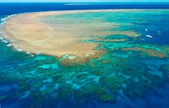
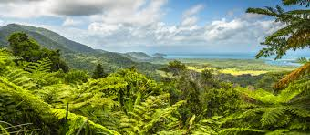
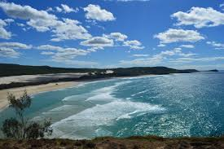
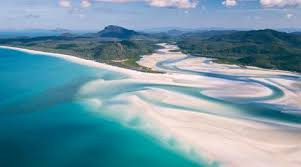
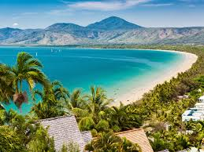

Great Barrier Reef,Queensland
It may be Australia's most famous attraction but with good reason! The Great Barrier Reef is one of the seven wonders of the natural world.Whether you are an avid diver, casual snorkeller or first time underwater newbie, there is something for everyone.You can book a liveaboard dive boat vacation to go out to the most remote dive sites of the reef, take a helicopter tour over the impressive waters, or you can try your hand at diving with a helmet. One of our favourite experiences.
Daintree Rainforest,Queensland
At 180 million years old, it covers 1200 square km and visitors can take a Dreamtime walk with an Indigenous guide from the Kuku Yalanji Tribe.Stay in the rainforest at Silky Oak Lodge and relax in your treehouse listening to the sounds of the ancient forest.You can also do some paddleboarding on the Mossman River. Don't worry, the local saltwater crocodiles don't come that far inland.
Fraser Island,
Fraser Island is one of the coolest Australian places to visit in Australia because of its 75-mile long beach! It's one of the longest in the world. Rent a four-wheel drive truck in the town of Noosa and start your adventure to one of the wildest drives you'll ever have.It's an island with sand dunes, dingos, tidal pools and shipwrecks.Oh and one more thing, drivers share the beach with airplanes! Yes, there is an airport right on the sandy shores.There are hotels and resorts that you can book on the island to spend more time exploring.
Whitsundays,Queensland
The Whitsundays are a group of 75 islands off the coast of Queensland. When visiting the Great Barrier Reef, you must spend some time here. These islands are located right in the heart of it!Beautiful white sandy beaches, swirl effortlessly with the turquoise water.There are luxury resorts, sailing and snorkelling. A must stop is the largest and most famous of all the islands, Whitehaven Beach.
Port Douglas,Queensland tropical north
It's the jumping off point for visiting the Great Barrier Reef and the Daintree Rainforest making it the perfect spot to spend a few days relaxing and exploring the beauty of Australia.Located along Australia's most scenic coast, a road trip to Port Douglas is a must